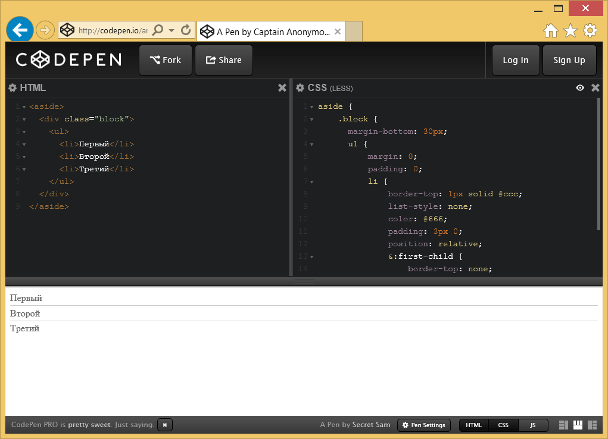

Платформа Codepen
Codepen — это популярная онлайновая платформа для редактирования и хранения кода на HTML, CSS и JavaScript с просмотром готового результата в браузере. Полученным кодом можно делиться и видоизменять его при необходимости. Окно браузера делится на несколько рабочих областей, в которых отображается результат, а также код на HTML и CSS (рис. 1).

Рис. 1. Вид Codepen
Codepen не требует регистрации, но это рекомендуется сделать, если вам часто приходится пользоваться данной платформой. Это добавляет возможность управлять набором разного кода и возвращаться к его редактированию. Начать с чистого листа можно по этой ссылке:
Или перейти к готовому коду по заранее известной ссылке, вроде этой:
http://codepen.io/anon/pen/BybpEg
В соответствующей рабочей области пишется код HTML и CSS, при этом служебные элементы вроде <head>, <body> и тому подобное добавлять не нужно. Сам результат написанного кода выводится в отдельной рабочей области, она обновляется автоматически при наборе кода.
Поскольку нас интересует не сам CSS, то для начала надо щёлкнуть по шестерёнке возле заголовка и в открывшемся списке задать Less. Тип выбранного препроцессора подсвечивается зелёным цветом и отображается в заголовке рабочей области (рис. 2).
Рис. 2. Выбор Less
Кроме того, там же можно указать следующие настройки.
- Normalize — стилевая библиотека для приведения некоторых стилевых свойств к единому значению и обнуления других свойств. Иногда бывает необходима для получения одинакового результата в разных браузерах с учётом современных стандартов.
- Reset — стилевая библиотека от Эрика Мейера, преследует ту же цель что и Normalize.
- -prefix-free — небольшой скрипт, который автоматически добавляет необходимые вендорные префиксы (вроде -webkit и -moz) к стилевым свойствам.
- Autoprefixer — альтернативный скрипт добавляющий префиксы к свойствам, это позволяет писать чистый современный код CSS не задумываясь о поддержке в браузерах.
- External CSS File or Another Pen — подключение внешнего стилевого файла; актуально при использовании сторонних библиотек вроде Bootstrap.
Переключение между Less и готовым CSS делается при щелчке по иконке глаза, показанной на рис. 3. Итоговый CSS править нельзя, но допустимо выделить его и скопировать.
Рис. 3. Иконка для переключения вида
Кодом можно поделиться, предварительно сохранив его и скопировав адрес в браузере. Адрес всегда уникален и однозначно ведёт к нашему коду. Так что эту ссылку можно писать на форумах и в комментариях для демонстрации кода и результата. Кроме того в Codepen есть специальная кнопка Share, щёлчок по которой открывает специальное меню (рис. 4).
Рис. 4. Меню Share
Через Share можно поделиться кодом в социальных сетях, скачать полный архив и получить прямую ссылку на код HTML, CSS или Less.

Все материалы сайта доступны по лицензии Creative Commons «Attribution-NonCommercial» («Атрибуция — Некоммерческое использование») 4.0 Всемирная, если не указано иное.